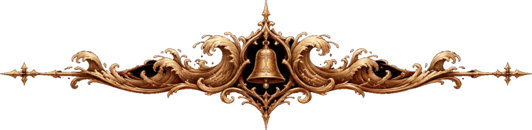

第一部 · 暗岩

第一章 末页
Chapter I · The Last Page
我写了三百页的笔记，最后一页只有一句话。
那是在，天快亮的时候。地面停了。我先是没有察觉——这么多夜以来，我已经习惯了脚下那一下一下的跳动，像睡在一头巨兽的胸口上，习惯到写字时会不自觉地跟着它落笔。可那天黎明，笔尖落下去，纸下面什么也没有回应。我把手掌按在石地上，按了很久，石头只是冷，只是石头。
于是我写：有人下去了，然后回来了。
写完我就再也写不出别的。三百页里有的碑文、冰窟壁上的刻痕、里那些未完成的铸模的尺寸，有和，有一颗烧不尽的心和一颗冻不坏的心。我以为我在记录历史。到最后一页才明白，我记下的从来只是一个人往下走的脚印。
的庆功宴，是托人捎信叫我去的。信上只有一句：今晚要给全营地的人加一顿肉，你也来。
我从荒原一路往北，到营地时天已经黑透。门口的篝火比我记忆里任何一次都旺，火星往上蹿，在夜空里拖出细细的熔铜色尾巴，落下来时已经成了灰。往年这堆火是为了把黑暗挡在外面的，守夜的人背对着它，眼睛盯着林子。今晚他们面朝着火，手里端着碗。
布兰站在门柱旁边，手里握着一把凿子。
门柱是老橡木的，十年风雨，表面早已发黑开裂。他在齐胸高的地方凿出了一个名字，凿得很深，木屑还挂在纹路里，被火光映成暖黄。我走近时，他正用拇指把最后一笔的毛刺抹平。
「来了。」他说，没有回头，「你看刻得正不正。」
我看了。我说正。其实那几个字有一点往右斜，像刻字的人手在发抖。布兰的手从来不抖，在狼林、在矿洞口、在地面像心跳一样跳动的那些夜里都没有抖过。我没有说破。
那人就坐在离火最远的一条长凳上，膝上横着一件兵器，手里一碗没怎么动的肉汤。营地里的孩子们轮流跑过去，又不敢靠得太近，在三步开外站住，看一眼，再跑回大人身边。有人往那人碗里添汤，有人递过去一块烤得焦黑的饼。那人一一接了，点头，不怎么说话。
那人一直不怎么说话。这一点我在笔记的第一页就写了：「来者寡言。」后来又在第四十页写：「不是寡言，是把话留给需要的时候。」再后来我就不写了，因为我发现自己在用这个人的沉默衡量一些东西——衡量一座副本有多深，衡量一个首领临死前说的话有多重。
布兰端着两碗酒走过来，把一碗塞进我手里，另一碗放在那人身边的凳子上。
「坐下，喝一杯。」他对那人说，然后在两人之间坐下，木凳吱呀一声。「从你第一天背着破剑走进营地，到今天……」
他说到这里停了，喝了一大口酒，用袖子擦嘴，好像剩下的话被酒冲下去了。过了一会儿，他才低声把那句话说完：
「灰石营地会记住你的名字。」
那人看着火，没有回答，只是端起那碗酒，和布兰的碗碰了一下。陶碗相碰的声音很闷，混在篝火的噼啪声里，几乎听不见。
我在旁边看着，没有拿出笔记。那一刻我想，有些事是不该写下来的，写下来就成了别人的。
宴席散得很晚。
孩子们先被抱回了屋，然后是女人们，然后是喝多了的守卫，一个扶着一个，嘴里还在争论到底是谁第一个在矿洞口见到了那人。篝火渐渐矮下去，只剩下一床暗红的炭，偶尔有一块塌下去，扬起一小股火星。
营地安静下来。是真正的安静。
我在营地里住过几个夜晚，都是在这件事之前。那时候的安静是假的：狗不叫，人不说话，可地面在跳，墙上挂着的铁锅会跟着轻轻磕碰墙壁，井里的水面会一圈一圈地起纹。守夜的人说听见有东西在下面喘气。布兰不信，后来信了，后来派人来找我，问我知道些什么——「让他全说出来。」带话的人原样转述了这句，有些尴尬。
我那时什么也说不出来。我只知道碑文都指向同一个名字。
今夜，锅不碰墙了，井水也平了。十年来第一个安静的夜晚，布兰在宴席上这么说，没有人反驳。
我回到布兰给我腾出的那间小屋，点上油灯，把笔记摊开在桌上。
我原本只是想再看一眼最后那一页。那一行字我写得很用力，墨迹透到了背面。我想看看它在灯下是什么样子，看看一个人写完三百页之后，最后剩下的东西到底有多少分量。
灯芯跳了一下。
最后一页上，我那行字的下面，多了一行字。
我先以为是墨迹透过来的影子，或是我眼睛花了——人老了，灯下看字总有重影。我把灯挪近，那行字没有动。它不是我的字。我写字习惯把横画收得很短，这行字的横画却拖得很长，像是有人在水里写的，每一笔的末端都洇开了一点，泛着极淡的青绿色。
我伸手去摸。纸是湿的。
不是被水泼过的那种湿，是从纸里面渗出来的，凉的，带着一点咸味，像是海水。可灰石营地离任何一片海都很远，远到营地里大部分人一辈子没见过海。
那行字写的是：
「钟停了。谁来敲下一下？」
我坐在那里，很长时间没有动。
我研究过暗岩所有副本留下的碑文。沙葬王陵的、冰窟的、熔心王座的、永霜墓穴的，我把它们拓下来，铺满烬火堡垒的整张长桌，一个字一个字地对。我记得每一块碑上提到过的东西：心，火，冬天，誓约，看门的狗。没有一块碑提到过钟。
可我的手在发抖，因为就在读到这行字的那一刻，我想起了一件事——地面跳动的那几个夜里，营地的地面在跳，一下，一下，所有人都说像心跳。只有一次，我半夜醒来，在那跳动的间隙里，好像听见了另一种声音。很远，很低，嗡的一声，余音拖得很长，像什么巨大的铜器被人从极深的地方轻轻碰了一下。
我当时以为是梦。我没有把它写进笔记。
现在它自己写进来了。
我拿着笔记出门时，炭火已经快熄了。月亮挂在营地西边的林梢上，冷白的光把屋檐、栅栏和门柱的影子都压得很扁。
营地中央那口古井边站着一个人。
我知道是谁。只有那个人会在这种时候不睡觉，站在一口井边上。
古井比营地还老。井口用灰石砌成，石缝里长着青苔，井沿上方立着一副空钟架，铁件生了很厚的锈，横梁上垂下一截断掉的皮绳，在夜风里轻轻晃。从我第一次来灰石营地起，它就是空的。营地里没有人说得清那上面原来挂过什么。孩子们拿它荡秋千，被布兰骂过几次，后来也就不去了。
那人一只手扶着钟架的立柱，正低头看着井里。
我走过去，在井沿另一边站住。井很深，月光只照进去一小截，再往下就是黑。黑的最底下，有一点水光。
水面在动。
不是风吹的。今夜没有什么风。是一圈一圈细细的涟漪，从井水正中央荡开，碰到井壁，再荡回来，规律得像呼吸——又不完全像。像潮水。我没见过几次海，但我在书里读过潮水，读过它怎样被看不见的东西牵着，一进，一退。
「从什么时候开始的？」我问。
那人没有抬头，只是把扶着钟架的那只手松开，翻过来，摊在月光下给我看。掌心有一道很浅的锈痕，青绿色的，和我笔记上那行字的颜色一模一样。
我把笔记翻到最后一页，递过去。
那人接过去，借着月光看了很久。我注意到那人的拇指在那行湿字上停了一下，没有去摸，只是停在旁边，像是怕把它碰散了。然后笔记被合上，递回我手里。
我们谁也没有说话。井底的涟漪还在一圈一圈地荡。远处，营地门口最后一块炭塌了下去，火星升起来，又落下，在这么远的地方看，那一点光是铜色的，暖的，小得几乎看不见。井里的光则是冷的，青的，像是从很深很深的地方透上来。
我忽然明白了一件事：那天黎明，当地面停止跳动的时候，我以为结束的是一件事。其实结束的，只是我能看见的那一部分。
「暗岩之心碎掉的时候，」我听见自己说，声音比我想象的要哑，「不是所有碎片都留在了你看见的地方。」
这是猜测，不是学问。我说完自己都吃了一惊——我做了一辈子的学者，很少把没有证据的话说出口。
那人终于抬起头，看了我一眼。
那一眼里没有疑问。我后来想了很多次该怎样把它写下来，最后只想到一个词：已经。那人已经知道了。也许比我更早，也许在今夜宴席的火光里，在布兰说「灰石营地会记住你的名字」的时候，那人就已经在听井底的声音了。
那天夜里我没有再睡。
我回到小屋，重新点上灯，把那本三百页的笔记推到桌子的一边，从包里取出一本空白的册子。纸是在烬火堡垒买的，粗，带着一点烟火气。我把它摊开，压平，蘸了墨。
我想了很久该从哪里写起。
从那行湿字写起，是最近的；从碑文写起，是我最熟悉的；从暗岩之心写起，是最重要的。可我最后发现，这些都不是开头。三百页的笔记里，我写了一切，唯独没有写那个人是怎么来的——因为那时我还不认识那个人，那时我以为值得记录的只有首领和碑文，只有历史。
而历史是从一个人背着一把破剑走进营地开始的。
窗外，天边泛出一点青灰。营地门柱上那个新刻的名字，在晨光里慢慢显出来，木头的切口还是新鲜的浅色，像一道还没长好的伤。井那边传来很轻的水声，一下，又一下。
我在空白册子的第一页写下：
「那是灰鬃狼最大胆的一年。营地东边，一夜之间少了两只羊。」
笔尖落下去，这一次，纸下面没有任何东西回应我。我知道这寂静不会太久了。
（第一章 完）